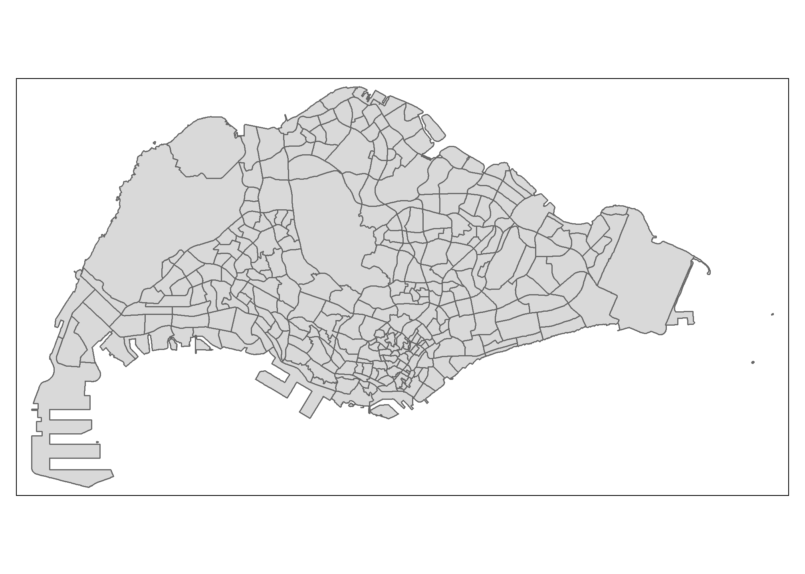
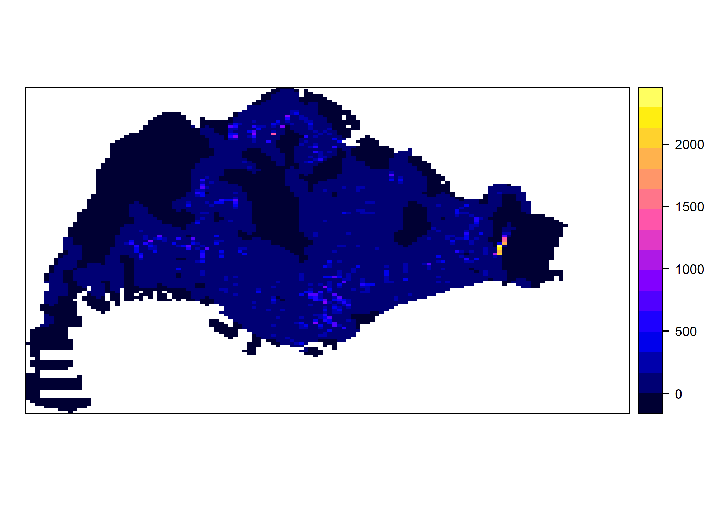

pacman::p_load(sf, spNetwork, tmap, arrow, tidyverse, spatstat, maptools, data.table, raster)Take-home Exercise 1: Application of Spatial Point Patterns Analysis to discover the geographical distribution of Grab hailing services in Singapore
#1. Overview
1.2 Objectives
Geospatial analytics hold tremendous potential to address complex problems facing society. In this study, you are tasked to apply appropriate spatial point patterns analysis methods to discover the geographical and spatio-temporal distribution of Grab hailing services locations in Singapore.
1.3 Tasks
The specific tasks of this take-home exercise are as follows:
Using appropriate function of sf and tidyverse, preparing the following geospatial data layer in sf tibble data.frames:
- Grab taxi location points either by origins or destinations.
- Road layer within Singapore excluding outer islands.
- Singapore boundary layer excluding outer islands
Using the extracted data, derive traditional Kernel Density Estimation layers.
Using the extracted data, derive either Network Kernel Density Estimation (NKDE) or Temporal Network Kernel Density Estimation (TNKDE)
Using appropriate tmap functions, display the kernel density layers on openstreetmap of Singapore.
Describe the spatial patterns revealed by the kernel density maps.
2. Packages
The R packages used in this project are: - sf: for importing, managing, and processing geospatial data. - tidyverse: a family of other R packages for performing data science tasks such as importing, wrangling, and visualising data. - tmap: creating thematic maps - maptools: a set of tools for manipulating geographic data - raster: reads, writes, manipulates, analyses, and model gridded spatial data (raster) - spatstat: for performing spatial point patterns analysis - spNetwork: for performing spatial analysis on network - arrow: to read parquet files - data.table: to manipulate large tables faster
We can load these packages with this code chunk:
3. Data
Aspatial: - Grab-Posisi Singapore
Geospatial: - Road data from OpenStreetMap of Geofabrik download server, - Master Plan 2019 Subzone Boundary (No Sea) from Data.gov.sg
3.1 Loading datasets
3.1.1 Grab-Posisi
We can load all the Grab-Posisi datasets with this code chunk:
file_list <- list.files('./data/GrabPosisi')
combined <- list()
for(i in seq(file_list)) {
data_name <- paste0('grabposisi', i - 1)
temp <- read_parquet(paste0('data/GrabPosisi/', file_list[i]))
combined[[i]] <- temp
}
grabposisi <- bind_rows(combined)What the code chunk above does, is that it takes in the names of the files in the specified folder, turning it into a list.
Now, we explore the grabposisi data
glimpse(grabposisi)Rows: 30,329,685
Columns: 9
$ trj_id <chr> "70014", "73573", "75567", "1410", "4354", "32630", "646…
$ driving_mode <chr> "car", "car", "car", "car", "car", "car", "car", "car", …
$ osname <chr> "android", "android", "android", "android", "android", "…
$ pingtimestamp <int> 1554943236, 1555582623, 1555141026, 1555731693, 15555844…
$ rawlat <dbl> 1.342326, 1.321781, 1.327088, 1.262482, 1.283799, 1.3003…
$ rawlng <dbl> 103.8890, 103.8564, 103.8613, 103.8238, 103.8072, 103.90…
$ speed <dbl> 18.910000, 17.719076, 14.021548, 13.026521, 14.812943, 2…
$ bearing <int> 248, 44, 34, 181, 93, 73, 82, 321, 324, 31, 203, 50, 252…
$ accuracy <dbl> 3.900, 4.000, 3.900, 4.000, 3.900, 3.900, 3.000, 3.649, …We noticed that pingtimestamp is an integer field, so we need to convert pingtimestamp field to a datetime format (POCIXCT)
grabposisi$pingtimestamp <- as_datetime(grabposisi$pingtimestamp)3.1.1.1 Origin
Now, we can extract the origin of a ride, based on trajectory id. We will group the rows based on trajectory id, and sort it in ascending order based on the timestamp. The first index of every trajectory id will be the starting point of that ride. After the extraction, we can use use st_as_sf() to convert it into an sf, with the parameter crs=4326 as the dataset is taken from GPS data, which typically uses the WGS-84. However, we need to use st_transform to set the crs to 3414, which is used in Singapore.
setDT(grabposisi)
grabposisi[, `:=`(
weekday = wday(pingtimestamp),
starting_hour = factor(hour(pingtimestamp)),
day = factor(mday(pingtimestamp))
)]
origin <- grabposisi[order(trj_id, pingtimestamp)
][, .SD[1], by = .(trj_id)
] |> st_as_sf(coords=c("rawlng", "rawlat"), crs=4326) |> st_transform(3414)
st_crs(origin)Coordinate Reference System:
User input: EPSG:3414
wkt:
PROJCRS["SVY21 / Singapore TM",
BASEGEOGCRS["SVY21",
DATUM["SVY21",
ELLIPSOID["WGS 84",6378137,298.257223563,
LENGTHUNIT["metre",1]]],
PRIMEM["Greenwich",0,
ANGLEUNIT["degree",0.0174532925199433]],
ID["EPSG",4757]],
CONVERSION["Singapore Transverse Mercator",
METHOD["Transverse Mercator",
ID["EPSG",9807]],
PARAMETER["Latitude of natural origin",1.36666666666667,
ANGLEUNIT["degree",0.0174532925199433],
ID["EPSG",8801]],
PARAMETER["Longitude of natural origin",103.833333333333,
ANGLEUNIT["degree",0.0174532925199433],
ID["EPSG",8802]],
PARAMETER["Scale factor at natural origin",1,
SCALEUNIT["unity",1],
ID["EPSG",8805]],
PARAMETER["False easting",28001.642,
LENGTHUNIT["metre",1],
ID["EPSG",8806]],
PARAMETER["False northing",38744.572,
LENGTHUNIT["metre",1],
ID["EPSG",8807]]],
CS[Cartesian,2],
AXIS["northing (N)",north,
ORDER[1],
LENGTHUNIT["metre",1]],
AXIS["easting (E)",east,
ORDER[2],
LENGTHUNIT["metre",1]],
USAGE[
SCOPE["Cadastre, engineering survey, topographic mapping."],
AREA["Singapore - onshore and offshore."],
BBOX[1.13,103.59,1.47,104.07]],
ID["EPSG",3414]]Let’s filter so that we only have cars in the data
origin <- filter(origin, driving_mode == 'car')Now, we can see what it looks like
qtm(origin)3.1.1.2 Destination
We can apply a similar logic to get the destination. The difference is that we need to sort it in descending order based on the timestamp.
setDT(grabposisi)
grabposisi[, `:=`(
weekday = wday(pingtimestamp),
starting_hour = factor(hour(pingtimestamp)),
day = factor(mday(pingtimestamp))
)]
destination <- grabposisi[order(trj_id, -pingtimestamp)
][, .SD[1], by = .(trj_id)
] |> st_as_sf(coords=c("rawlng", "rawlat"), crs=4326) |> st_transform(3414)
st_crs(destination)Coordinate Reference System:
User input: EPSG:3414
wkt:
PROJCRS["SVY21 / Singapore TM",
BASEGEOGCRS["SVY21",
DATUM["SVY21",
ELLIPSOID["WGS 84",6378137,298.257223563,
LENGTHUNIT["metre",1]]],
PRIMEM["Greenwich",0,
ANGLEUNIT["degree",0.0174532925199433]],
ID["EPSG",4757]],
CONVERSION["Singapore Transverse Mercator",
METHOD["Transverse Mercator",
ID["EPSG",9807]],
PARAMETER["Latitude of natural origin",1.36666666666667,
ANGLEUNIT["degree",0.0174532925199433],
ID["EPSG",8801]],
PARAMETER["Longitude of natural origin",103.833333333333,
ANGLEUNIT["degree",0.0174532925199433],
ID["EPSG",8802]],
PARAMETER["Scale factor at natural origin",1,
SCALEUNIT["unity",1],
ID["EPSG",8805]],
PARAMETER["False easting",28001.642,
LENGTHUNIT["metre",1],
ID["EPSG",8806]],
PARAMETER["False northing",38744.572,
LENGTHUNIT["metre",1],
ID["EPSG",8807]]],
CS[Cartesian,2],
AXIS["northing (N)",north,
ORDER[1],
LENGTHUNIT["metre",1]],
AXIS["easting (E)",east,
ORDER[2],
LENGTHUNIT["metre",1]],
USAGE[
SCOPE["Cadastre, engineering survey, topographic mapping."],
AREA["Singapore - onshore and offshore."],
BBOX[1.13,103.59,1.47,104.07]],
ID["EPSG",3414]]Same as above, we can filter it
destination <- filter(destination, driving_mode == 'car')And plot it
qtm(destination)3.1.2 Geospatial Data
3.1.2.1 MPSZ
Now, we need to load the geospatial data. Let’s start with the 2019 Subzone Master Plan
mpsz2019_sf <- st_read(dsn='data/Geospatial/MPSZ-2019', layer='MPSZ-2019') |> st_transform(crs=3414)Reading layer `MPSZ-2019' from data source
`C:\Users\yozaf\SMUY3S2\Geospatial\IS415-GAA\Take-home_Ex\Take-home_Ex01\data\Geospatial\MPSZ-2019'
using driver `ESRI Shapefile'
Simple feature collection with 332 features and 6 fields
Geometry type: MULTIPOLYGON
Dimension: XY
Bounding box: xmin: 103.6057 ymin: 1.158699 xmax: 104.0885 ymax: 1.470775
Geodetic CRS: WGS 84st_crs(mpsz2019_sf)Coordinate Reference System:
User input: EPSG:3414
wkt:
PROJCRS["SVY21 / Singapore TM",
BASEGEOGCRS["SVY21",
DATUM["SVY21",
ELLIPSOID["WGS 84",6378137,298.257223563,
LENGTHUNIT["metre",1]]],
PRIMEM["Greenwich",0,
ANGLEUNIT["degree",0.0174532925199433]],
ID["EPSG",4757]],
CONVERSION["Singapore Transverse Mercator",
METHOD["Transverse Mercator",
ID["EPSG",9807]],
PARAMETER["Latitude of natural origin",1.36666666666667,
ANGLEUNIT["degree",0.0174532925199433],
ID["EPSG",8801]],
PARAMETER["Longitude of natural origin",103.833333333333,
ANGLEUNIT["degree",0.0174532925199433],
ID["EPSG",8802]],
PARAMETER["Scale factor at natural origin",1,
SCALEUNIT["unity",1],
ID["EPSG",8805]],
PARAMETER["False easting",28001.642,
LENGTHUNIT["metre",1],
ID["EPSG",8806]],
PARAMETER["False northing",38744.572,
LENGTHUNIT["metre",1],
ID["EPSG",8807]]],
CS[Cartesian,2],
AXIS["northing (N)",north,
ORDER[1],
LENGTHUNIT["metre",1]],
AXIS["easting (E)",east,
ORDER[2],
LENGTHUNIT["metre",1]],
USAGE[
SCOPE["Cadastre, engineering survey, topographic mapping."],
AREA["Singapore - onshore and offshore."],
BBOX[1.13,103.59,1.47,104.07]],
ID["EPSG",3414]]And see what it looks like on a plot.
qtm(mpsz2019_sf)Notice that this includes the surrounding islands. To extract only the main island, we can filter out the surrounding islands with this code chunk below. The !grepl() function will find any of the rows that doesn’t include “ISLAND” in their PLN_AREA_N column. You can see the difference between the plots
Notice that this includes the surrounding islands. To extract only the main island, we can filter out the surrounding islands with this code chunk below
mpsz2019_sf <- mpsz2019_sf[!grepl("ISLAND", mpsz2019_sf$PLN_AREA_N, ignore.case = TRUE), ]
qtm(mpsz2019_sf)
Now, we can get the outline of Singapore’s main island with st_union()
sg_sf <- mpsz2019_sf |> st_union()
plot(sg_sf)3.1.2.2 Road Data
After the Master Plan, we can move on to the Road Data Set
road_sf <- st_read(dsn = 'data/Geospatial/malaysia-singapore-brunei-latest-free.shp', layer='gis_osm_roads_free_1') |> st_transform(crs=3414)Reading layer `gis_osm_roads_free_1' from data source
`C:\Users\yozaf\SMUY3S2\Geospatial\IS415-GAA\Take-home_Ex\Take-home_Ex01\data\Geospatial\malaysia-singapore-brunei-latest-free.shp'
using driver `ESRI Shapefile'
Simple feature collection with 1765176 features and 10 fields
Geometry type: LINESTRING
Dimension: XY
Bounding box: xmin: 99.66041 ymin: 0.8021131 xmax: 119.2601 ymax: 7.514393
Geodetic CRS: WGS 84st_crs(road_sf)Coordinate Reference System:
User input: EPSG:3414
wkt:
PROJCRS["SVY21 / Singapore TM",
BASEGEOGCRS["SVY21",
DATUM["SVY21",
ELLIPSOID["WGS 84",6378137,298.257223563,
LENGTHUNIT["metre",1]]],
PRIMEM["Greenwich",0,
ANGLEUNIT["degree",0.0174532925199433]],
ID["EPSG",4757]],
CONVERSION["Singapore Transverse Mercator",
METHOD["Transverse Mercator",
ID["EPSG",9807]],
PARAMETER["Latitude of natural origin",1.36666666666667,
ANGLEUNIT["degree",0.0174532925199433],
ID["EPSG",8801]],
PARAMETER["Longitude of natural origin",103.833333333333,
ANGLEUNIT["degree",0.0174532925199433],
ID["EPSG",8802]],
PARAMETER["Scale factor at natural origin",1,
SCALEUNIT["unity",1],
ID["EPSG",8805]],
PARAMETER["False easting",28001.642,
LENGTHUNIT["metre",1],
ID["EPSG",8806]],
PARAMETER["False northing",38744.572,
LENGTHUNIT["metre",1],
ID["EPSG",8807]]],
CS[Cartesian,2],
AXIS["northing (N)",north,
ORDER[1],
LENGTHUNIT["metre",1]],
AXIS["easting (E)",east,
ORDER[2],
LENGTHUNIT["metre",1]],
USAGE[
SCOPE["Cadastre, engineering survey, topographic mapping."],
AREA["Singapore - onshore and offshore."],
BBOX[1.13,103.59,1.47,104.07]],
ID["EPSG",3414]]glimpse(road_sf)Rows: 1,765,176
Columns: 11
$ osm_id <chr> "4386520", "4578273", "4579495", "4579533", "4579534", "45795…
$ code <int> 5113, 5114, 5122, 5122, 5122, 5122, 5141, 5122, 5122, 5122, 5…
$ fclass <chr> "primary", "secondary", "residential", "residential", "reside…
$ name <chr> "Orchard Road", "Jalan Bukit Bintang", "Jalan Nagasari", "Per…
$ ref <chr> NA, NA, NA, NA, NA, NA, NA, NA, NA, NA, NA, NA, NA, NA, NA, N…
$ oneway <chr> "F", "F", "B", "B", "B", "F", "F", "F", "F", "F", "B", "B", "…
$ maxspeed <int> 50, 0, 0, 0, 0, 0, 0, 0, 0, 0, 0, 0, 0, 0, 0, 0, 0, 50, 0, 0,…
$ layer <dbl> 0, 0, 0, 0, 0, 0, -1, 0, 0, 0, 0, 0, 0, 0, 0, 0, 0, 0, 0, 0, …
$ bridge <chr> "F", "F", "F", "F", "F", "F", "F", "F", "F", "F", "F", "F", "…
$ tunnel <chr> "F", "F", "F", "F", "F", "F", "T", "F", "F", "F", "F", "F", "…
$ geometry <LINESTRING [m]> LINESTRING (27637.52 32038...., LINESTRING (-20666…3.2 Converting to PPP
Since KDE requires the point data to be in ppp format, we will convert our origin and destination to ppp. To do this, we can convert it into a Spatial* object with as_Spatial(), then to an sp object with as(x, ‘SpatialPoints’), then finally to ppp with as(x, ‘ppp’)
origin_spatial <- as_Spatial(origin)
origin_sp <- as(origin_spatial, 'SpatialPoints')
origin_ppp <- as(origin_sp, 'ppp')
destination_spatial <- as_Spatial(destination)
destination_sp <- as(destination_spatial, 'SpatialPoints')
destination_ppp <- as(destination_sp, 'ppp')
#Alternatively, we can also use the commented codes below to directly convert to ppp
# origin_ppp <- as.ppp(origin)
# destination_ppp <- as.ppp(destination)Plot it to see how it looks like
plot(origin_ppp)plot(destination_ppp)We can check for duplicates
any(duplicated(origin_ppp))[1] FALSEany(duplicated(destination_ppp))[1] FALSESince both origin_ppp and destination_ppp doesn’t have duplicates, we can move on to the next step
3.3 Converting to OWIN Object
We need to convert our sg_sf, which is the Singapore main island’s outline, to an OWIN object
sg_owin <- as.owin(sg_sf)
plot(sg_owin)3.5 Combining point events object and OWIN object
Before performing the analysis, we need to extract only points that are inside Singapore’s main island
origin_sg <- origin_ppp[sg_owin]
destination_sg <- destination_ppp[sg_owin]Convert it to use kilometres as units, since what we have now is in terms of metres
origin_sg_km <- rescale(origin_sg, 1000, 'km')
destination_sg_km <- rescale(destination_sg, 1000, 'km')4. KDE
4.1 First Order Spatial Point Patterns Analysis
4.1.1 KDE with automatic bandwith selection method
We will compare computations using these method: - bw.diggle() - bw.CvL() - bw.scott() - bw.ppl()
Origin
kde_origin_diggle <- density(origin_sg_km,
sigma=bw.diggle,
edge=TRUE,
kernel="gaussian")
kde_origin_cvl <- density(origin_sg_km,
sigma=bw.CvL,
edge=TRUE,
kernel="gaussian")
kde_origin_scott <- density(origin_sg_km,
sigma=bw.scott,
edge=TRUE,
kernel="gaussian")
kde_origin_ppl <- density(origin_sg_km,
sigma=bw.ppl,
edge=TRUE,
kernel="gaussian")Now we can see the plot for comparison
par(mfrow=c(2,2))
plot(kde_origin_diggle, main = "bw.diggle")
plot(kde_origin_cvl, main = "bw.cvl")
plot(kde_origin_scott, main = "bw.scott")
plot(kde_origin_ppl, main = "bw.ppl")
Destination
kde_destination_diggle <- density(destination_sg_km,
sigma=bw.diggle,
edge=TRUE,
kernel="gaussian")
kde_destination_cvl <- density(destination_sg_km,
sigma=bw.CvL,
edge=TRUE,
kernel="gaussian")
kde_destination_scott <- density(destination_sg_km,
sigma=bw.scott,
edge=TRUE,
kernel="gaussian")
kde_destination_ppl <- density(destination_sg_km,
sigma=bw.ppl,
edge=TRUE,
kernel="gaussian")Now we can see the plot for comparison
par(mfrow=c(2,2))
plot(kde_destination_diggle, main = "bw.diggle")
plot(kde_destination_cvl, main = "bw.cvl")
plot(kde_destination_scott, main = "bw.scott")
plot(kde_destination_ppl, main = "bw.ppl")4.1.2 Adaptive Bandwidth KDE
The issue about fixed bandwidth is that less crowded areas, such as countrysides, tends to be less dense compared to more crowded areas like CBDs or city centres. Thus, we can use the adaptive.density() to help overcome this.
kde_origin_adaptive <- adaptive.density(origin_sg_km, method="kernel")
kde_destination_adaptive <- adaptive.density(destination_sg_km, method="kernel")We can see the KDE through these plots
plot(kde_origin_adaptive)plot(kde_destination_adaptive)4.1.3 Converting KDE Output to Grid Object
We can convert the output into a grid object for a more suitable mapping without changing the result
grid_kde_origin <- as.SpatialGridDataFrame.im(kde_origin_adaptive)
spplot(grid_kde_origin)
grid_kde_destination <- as.SpatialGridDataFrame.im(kde_destination_adaptive)
spplot(grid_kde_destination)4.1.4 Converting Grid to Raster
Next, we will conver the grid to a RasterLayer object using the raster() function
kde_origin_raster <- raster(kde_origin_adaptive)
kde_origin_rasterclass : RasterLayer
dimensions : 128, 128, 16384 (nrow, ncol, ncell)
resolution : 0.4162063, 0.2250614 (x, y)
extent : 2.667538, 55.94194, 21.44847, 50.25633 (xmin, xmax, ymin, ymax)
crs : NA
source : memory
names : layer
values : -1.254928e-14, 2296.831 (min, max)kde_destination_raster <- raster(kde_destination_adaptive)
kde_destination_rasterclass : RasterLayer
dimensions : 128, 128, 16384 (nrow, ncol, ncell)
resolution : 0.4162063, 0.2250614 (x, y)
extent : 2.667538, 55.94194, 21.44847, 50.25633 (xmin, xmax, ymin, ymax)
crs : NA
source : memory
names : layer
values : -1.882384e-13, 1996.507 (min, max)Since there is no crs property when we first make a RasterLayer object, we can assign it
projection(kde_origin_raster) <- CRS("+init=EPSG:3414")
kde_origin_rasterclass : RasterLayer
dimensions : 128, 128, 16384 (nrow, ncol, ncell)
resolution : 0.4162063, 0.2250614 (x, y)
extent : 2.667538, 55.94194, 21.44847, 50.25633 (xmin, xmax, ymin, ymax)
crs : +proj=tmerc +lat_0=1.36666666666667 +lon_0=103.833333333333 +k=1 +x_0=28001.642 +y_0=38744.572 +ellps=WGS84 +units=m +no_defs
source : memory
names : layer
values : -1.254928e-14, 2296.831 (min, max)projection(kde_destination_raster) <- CRS("+init=EPSG:3414")
kde_destination_rasterclass : RasterLayer
dimensions : 128, 128, 16384 (nrow, ncol, ncell)
resolution : 0.4162063, 0.2250614 (x, y)
extent : 2.667538, 55.94194, 21.44847, 50.25633 (xmin, xmax, ymin, ymax)
crs : +proj=tmerc +lat_0=1.36666666666667 +lon_0=103.833333333333 +k=1 +x_0=28001.642 +y_0=38744.572 +ellps=WGS84 +units=m +no_defs
source : memory
names : layer
values : -1.882384e-13, 1996.507 (min, max)4.1.5 Visualization
tm_shape(kde_origin_raster) +
tm_raster("layer") +
tm_layout(legend.position = c("right", "bottom"), frame = FALSE)Variable(s) "layer" contains positive and negative values, so midpoint is set to 0. Set midpoint = NA to show the full spectrum of the color palette.tm_shape(kde_destination_raster) +
tm_raster("layer") +
tm_layout(legend.position = c("right", "bottom"), frame = FALSE)Variable(s) "layer" contains positive and negative values, so midpoint is set to 0. Set midpoint = NA to show the full spectrum of the color palette.4.1.6 Testing Spatial Point Patterns Using Clark and Evans Test
Origin
The test hypotheses are:
Ho = The distribution of grab origin points are randomly distributed.
H1= The distribution of grab origin points are not randomly distributed.
The 95% confident interval will be used.
We can use the CLark-Evans test of aggregation using clarkevans.test() from statspat
origin_clarkevans <- clarkevans.test(origin_ppp,
correction="none",
clipregion="sg_owin",
alternative=c("clustered"))
origin_clarkevans
Clark-Evans test
No edge correction
Z-test
data: origin_ppp
R = 0.21648, p-value < 2.2e-16
alternative hypothesis: clustered (R < 1)The Clark-Evans test shows an R value that is much smaller than 1. This means that the points are very close to each other, implying that the points are clustered. The p-value also shows that we can reject the null hyphotesis that the distribution of grab origin points are randomly distributed
Destination
The test hypotheses are:
Ho = The distribution of grab destination points are randomly distributed.
H1= The distribution of grab destination points are not randomly distributed.
The 95% confident interval will be used.
destination_clarkevans <- clarkevans.test(destination_ppp,
correction="none",
clipregion="sg_owin",
alternative=c("clustered"))
destination_clarkevans
Clark-Evans test
No edge correction
Z-test
data: destination_ppp
R = 0.23392, p-value < 2.2e-16
alternative hypothesis: clustered (R < 1)The Clark-Evans test shows an R value that is much smaller than 1. This means that the points are very close to each other, implying that the points are clustered. The p-value also shows that we can reject the null hyphotesis that the distribution of grab destination points are randomly distributed
4.2 Network Constrained Spatial Point Pattern Analysis
For Network Constrained Spatial Point Pattern Analysis, we are taking into account the roads in Singapore.
4.2.1 Preparing Road Objects
First, we prepare an object that contains roads in Singapore. We can use st_within to extract the roads from our dataset from OSM that matches/intersects with the MPSZ. Since we are only looking at roads that is suitable for cars, one way we can do it is by excluding rows where the max speed is 0
sg_road <- road_sf[st_contains(sg_sf, road_sf, sparse = FALSE), ] |> filter(maxspeed > 0)
qtm(sg_road)
4.2.2 NKDE for Origin
First, let’s see how it looks like
tm_shape(sg_road) + tm_lines() +
tm_shape(origin) + tm_dots('red', size=0.02)4.2.2.1 Preparing Origin Lixels and Line Centre Points
We will also extract the origin to include only those who are inside the Singapore main island’s boundary
origin_events <- origin[st_contains(sg_sf, origin, sparse = FALSE), ]
origin_events <- data.frame(origin_events$trj_id, origin_events$geometry) |> st_as_sf(crs=3414)
st_crs(origin_events)Coordinate Reference System:
User input: EPSG:3414
wkt:
PROJCRS["SVY21 / Singapore TM",
BASEGEOGCRS["SVY21",
DATUM["SVY21",
ELLIPSOID["WGS 84",6378137,298.257223563,
LENGTHUNIT["metre",1]]],
PRIMEM["Greenwich",0,
ANGLEUNIT["degree",0.0174532925199433]],
ID["EPSG",4757]],
CONVERSION["Singapore Transverse Mercator",
METHOD["Transverse Mercator",
ID["EPSG",9807]],
PARAMETER["Latitude of natural origin",1.36666666666667,
ANGLEUNIT["degree",0.0174532925199433],
ID["EPSG",8801]],
PARAMETER["Longitude of natural origin",103.833333333333,
ANGLEUNIT["degree",0.0174532925199433],
ID["EPSG",8802]],
PARAMETER["Scale factor at natural origin",1,
SCALEUNIT["unity",1],
ID["EPSG",8805]],
PARAMETER["False easting",28001.642,
LENGTHUNIT["metre",1],
ID["EPSG",8806]],
PARAMETER["False northing",38744.572,
LENGTHUNIT["metre",1],
ID["EPSG",8807]]],
CS[Cartesian,2],
AXIS["northing (N)",north,
ORDER[1],
LENGTHUNIT["metre",1]],
AXIS["easting (E)",east,
ORDER[2],
LENGTHUNIT["metre",1]],
USAGE[
SCOPE["Cadastre, engineering survey, topographic mapping."],
AREA["Singapore - onshore and offshore."],
BBOX[1.13,103.59,1.47,104.07]],
ID["EPSG",3414]]Before performing NKDE, we need to cut the sg_road into lixels. In this example, our lixels will have a length of 700 and minimum length of 350
origin_lixels <- lixelize_lines(sg_road,
700,
mindist = 350)
origin_samples <- lines_center(origin_lixels)4.2.2.2 Performing NKDE
We will be using nkde.mc(), instead of the usual nkde(). The difference between the two functions is that when paired with the future package, nkde.mc allows for multiple workers to compute the nkde at the same time. We will also set the agg value to 20, which means that points within 20 metres of each other will be aggregrated. The grid_shape will also be set to c(16, 16) to indicate that we are splitting the data to a 16x16 grid that will be computated separately and combined together in the end. All these steps will help in making the runtime of the code a bit faster compared to using the usual default setup.
future::plan(future::multisession(workers=4))
origin_densities <- nkde.mc(sg_road,
events = origin_events,
w = rep(1,nrow(origin_events)),
samples = origin_samples,
kernel_name = "quartic",
bw = 300,
adaptive = TRUE, # we use here an adaptive bandwidth
trim_bw = 600, # the maximum local values of bandwidth will be 600m
div= "bw",
method = "simple",
digits = 1,
tol = 1,
grid_shape = c(16,16),
max_depth = 8,
agg = 20,
sparse = TRUE,
verbose = FALSE)
if (!inherits(future::plan(), "sequential")) future::plan(future::sequential)4.2.2.3 Insert Densities to Lixel and Sample
After finishing the computation, we need to put the density value into the samples and lixels. Don’t forget to adjust the scale to kilometer
origin_samples$density <- origin_densities$k
origin_lixels$density <- origin_densities$k
origin_samples$density <- origin_samples$density*1000
origin_lixels$density <- origin_lixels$density*10004.2.2.4 Visualization
We can use tmaps to visualize the result of our NKDE
tm_shape(origin_lixels)+
tm_lines()+
tm_shape(origin_samples)+
tm_dots("density", style="kmeans", palette="GnBu", n=7, size=0.2)4.2.3 NKDE for Destination
For destination, we are doing the exact same process, but changing the event points to the destination points. To get the NKDE for Destination points, simply use the code for the Origin points, but change the dataset to the Destination dataset.
5. Kernel Density Maps on OpenStreetMap
Now we are aiming to plot our kernel density maps on OpenStreetMap to make describing spatial patterns more intuitive.
5.1 Defining a Kernel Density Map Function
First, we can create a function called density_map, which can be called later on to visualize our maps.
density_map <- function(raster_object, map_title) {
tm_basemap("OpenStreetMap") +
tm_shape(raster_object) +
tm_raster("layer", alpha=0.65) +
tm_layout(legend.position = c("right", "bottom"),
legend.height = 0.5,
legend.width = 0.4,
main.title = map_title,
main.title.position = 'center',
main.title.size = 1,
frame = FALSE)
} 5.2 Plotting Density Map
To plot our density map, we can coll on the density_map function we defined before
origin_density_map <- density_map(kde_origin_raster, "GrabPosisi Origin")
origin_density_mapVariable(s) "layer" contains positive and negative values, so midpoint is set to 0. Set midpoint = NA to show the full spectrum of the color palette.destination_density_map <- density_map(kde_destination_raster, "GrabPosisi Destination")
destination_density_mapVariable(s) "layer" contains positive and negative values, so midpoint is set to 0. Set midpoint = NA to show the full spectrum of the color palette.Reference
- https://is415-msty.netlify.app/posts/2021-09-19-take-home-exercise-2/
- https://rdrr.io/cran/spNetwork/man/nkde.mc.html
- https://journal.r-project.org/archive/2021/RJ-2021-102/RJ-2021-102.pdf
- https://r4gdsa.netlify.app/chap07
- https://r4gdsa.netlify.app/chap04
Misc
Saving data to RDS
We can use write_rds() to save our loaded data into an RDS file, making it easier to reload any data we might need again
write_rds(origin, 'data/rds/origin.rds')
write_rds(destination, 'data/rds/destination.rds')
write_rds(road_sf, 'data/rds/road_sf.rds')
write_rds(mpsz2019_sf, 'data/rds/mpsz2019_sf.rds')
write_rds(origin_lixels, 'data/rds/origin_lixels.rds')
write_rds(destination_lixels, 'data/rds/destination_lixels.rds')
write_rds(origin_samples, 'data/rds/origin_samples.rds')
write_rds(destination_samples, 'data/rds/destination_samples.rds')
write_rds(sg_road, 'data/rds/sg_road.rds')
write_rds(origin_densities, 'data/rds/origin_densities.rds')
write_rds(destination_densities, 'data/rds/destination_densities.rds')Loading data from RDS
We can use read_rds() to reload any saved RDS file
origin <- read_rds('data/rds/origin.rds')
destination <- read_rds('data/rds/destination.rds')
road_sf <- read_rds('data/rds/road_sf.rds')
mpsz2019_sf <- read_rds('data/rds/mpsz2019_sf.rds')
sg_sf <- read_rds('data/rds/sg_sf.rds')
origin_densities <- read_rds('data/rds/origin_densities.rds')
destination_densities <- read_rds('data/rds/destination_densities.rds')
origin_lixels <- read_rds('data/rds/origin_lixels.rds')
destination_lixels <- read_rds('data/rds/destination_lixels.rds')
origin_samples <- read_rds('data/rds/origin_samples.rds')
destination_samples <- read_rds('data/rds/destination_samples.rds')